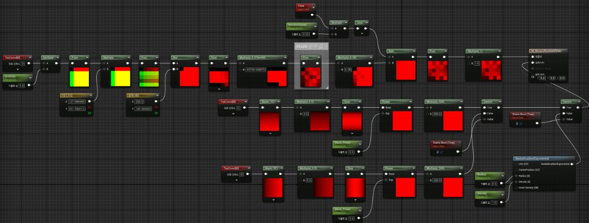
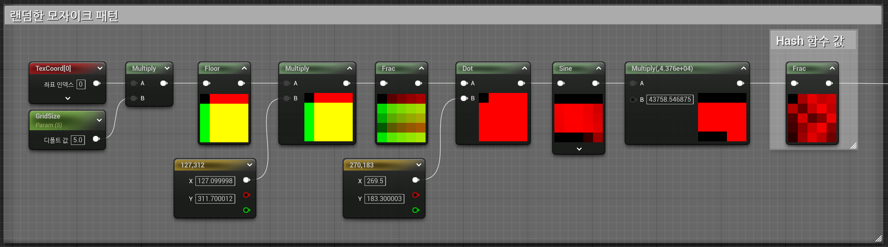
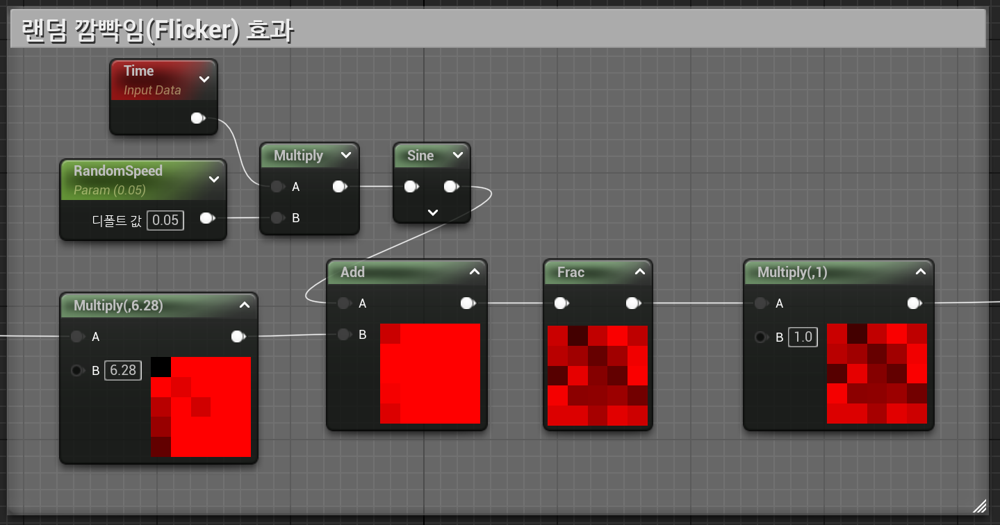
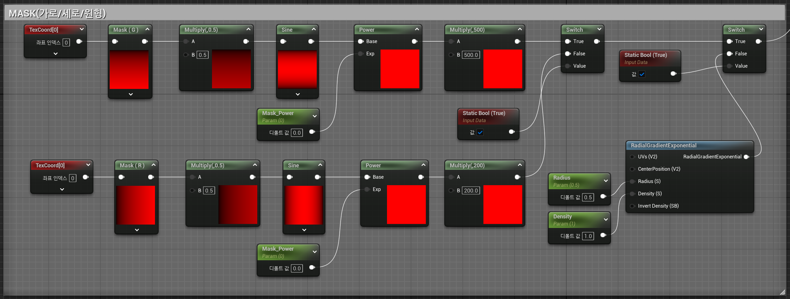

노드 구현 포인트
모자이크 패턴
랜덤 깜빡임(Flicker) 효과
타일별 랜덤 값 생성
랜덤한 투명도 시간 컨트롤

노드 풀이
UV 좌표를 격자로 변환 (Floor(UV * GridSize))
타일마다 고유한 랜덤 값 생성 (Hash 함수 활용)
Hash 함수를 써야하는 이유
- 각 모자이크 타일마다 랜덤한 값(밝기, Flicker 속도 등)이 필요함
- 매 프레임마다 값이 변하면 안 되고, 같은 위치는 항상 같은 값이 나와야 함
- 텍스처 없이 계산만으로 랜덤한 효과를 만들고 싶음

자주 사용하게 되는 노드 설명
Floor : 소수점 이하를 버려주어 격자 형태의 UV 좌표가 만들어지며, 같은 칸 안에서는 동일한 좌표 값을 가지게 됩니다.
Frac : 소수 부분만을 따로 이용하려는 경우에 매우 유용하며, 시각적인 효과나 애니메이션을 더욱 정밀하게 제어할 수 있게 도와줍니다.
Sine : 주기적인 파형을 생성하므로, 이를 사용하여 반복되는 애니메이션, 물결, 깜빡이는 효과 등 다양한 시각적 효과를 쉽게 만들 수 있습니다.
Sine(Time + RandomOffset) 을 사용하여 부드럽게 깜빡이게 만듦
랜덤 오프셋을 적용하여 타일마다 Flicker 타이밍을 다르게 설정
Frac 노드를 사용하여 반복적인 동작이 아닌 불규칙한 동작으로 변경

Time : 등속도 운동을 하는 일정한 그래프 노드 입니다.
Texture 활용을 최대한 적게 사용하고자 마스크 또한 UV로 제작하였고 Switch Node를 사용하여 보다 많은 마스크 환경을 제공하였습니다.

RadialGradientExponential : UE5에서 기본적으로 제공하는 Matrial 함수 이며 원형 그라데이션이 필요할때 텍스처 대신 쓰일수 있습니다.
Swith : Static Bool의 설정값에 따라 보여지는 이미지를 다르게 혹은 값을 다르게 나오도록 할수 있습니다.
Static Bool : 참/거짓의 설정값을 인스턴스에서 결정해 줄수 있습니다.